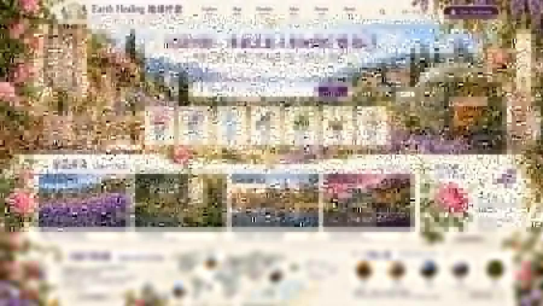

植物
本草、药用植物、花园与民族植物知识
PLANTS · PEOPLE · PLACES · TIME
不需要先懂中医、草药、芳香、冥想或传统医学。选一个地方，滑过年代，点开一个故事。
一段适合第一次进入 Earth Healing 的 3 分钟入口。
DYNAMIC WORLD MAP
拖动时间轴，看不同地区的植物、浴疗、声音、药师制剂与传统如何出现、传播和变化。
STORY MODE
你先知道“我们在哪里、现在是什么年代、眼前是什么”，再展开人物、植物、器物、视频、证据与安全信息。


EXPLORE BY THEME
本草、药用植物、花园与民族植物知识
精油、纯露、香料、蒸馏与气味文化
药浴、温泉、Hammam、Sauna 与蓝色空间
吟唱、音乐、鼓、声学与“频率”分层
针、灸、推拿、按摩、呼吸与运动
民间疗愈、宗教仪式、地方传统与文化语境
TRADITION ≠ BIOMEDICAL PROOF
Earth Healing 会保留历史、文化、灵性和民间叙事，但不会把它们自动写成现代医学事实。每个条目都可以继续展开 Evidence · Safety · Sources。